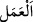
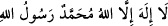

“Onları da Allah’a amel-i sâlih ulaştırır.”
Müfredat’ta der ki: “Yükseltme “__WORD__ kelimesi bazen bulunduğu yerden yükseltilen
cisimler, bazen yüksek binâlar, bazen yüksek sesle yapılan zikir için söylenir. Bazen de
yüksek mesken ve menzil için söylenir.” Burada “__WORD__ fiilinde gizli bulunan “__WORD__”
zamirinin mercii konusunda bir kaç görüş vardır: Birincisi bu zamir, “__WORD__ kelimesine
râcîdir. Zira amel ancak tevhid ve îmanla kabul edilir. “__WORD__ diye mansûb okuyuş
şekli de bu mânâyı teyîd eder. Yâni tevhid bizzat kendisi yükselir ve kabûle sebep
olarak sâlih ameli de yükseltir. Şirkten dolayı kâfirlerin amellerinin reddedildiği ve
boşa çıktığı gözardı edilmemelidir.
İkincisi; bu zamir “__WORD__ kelimesine râcidir. Zira sâlih amel îmanı kuvvetlendirip
hakikat mertebesine yükseltmektedir. Yine yüksek derecelere de hep sâlih amel ile
ulaşılır. İrşâd’da böyledir. Şeyh der ki; tevhid ancak taat sebebiyle kabul edilir. Zira
isyanla beraber tevhid pek fayda vermez. Yâni azaba engel olmaz. Yine de İrşâd’daki
yorum daha evlâ ve daha makbuldur. Zira ameller merdiven ve asansör gibidir. Amelsiz
söz; yağsız tirit ekmeği, yağmursuz bulut ve kirişsiz yay gibidir. Kâşifî bu âyet hakkında
der ki: “O’na güzel amel yükselir ve kabûl makamına ulaşır. Sâlih amelsiz söz
faydasızdır. Güzel sözler duâdır, sâlih amel miskinlerin sadakasıdır. Çoğunlukla
duâların icâbeti sadakalarladır. Veya kelimeler, imamların duâsıdır ve amel cemaatlerin
teminidir. Veya kelimeler gazilerin tekbirleridir ve amel kılıç vurmaktır. Veya kelimeler
istiğfardır ve amel pişmanlık. Yâni her halükârda kelimeleri yükselten ameldir.”
Üçüncüsü; bu zamir, Allah’a, ism-i celile râcîdir. Yâni “sâlih ameli Allah kabul eder”
demektir. İbn Atıyye, “bu görüş en üstün görüştür”, der. Buna göre şerefin sâlih amele
tahsis edilmesi, sâlih amelde külfet, zahmet ve meşakkat olduğu içindir. Hallü’r-
rumûz’da der ki: “Ulema derler ki: « __WORD__ » kelimesi bizzat Allah’a
yükselir. Diğer zikir ve amelleri ise melekler Allah’a yükseltirler.”
Âyetin mânâsı şudur: Koruyucu ve yazıcı meleklerin elleriyle sâlih ameli Hak Teâlâ
hazretlerine yükseltir ve kabul eder” demektir. Yine rivayete göre yetimin duâsı ve aynı
şekilde mazlumun duâsı melek vâsıtası olmaksızın bizzat Allah’a yükselir. Burada şöyle
bir mânâ da vardır: Allah Teâlâ’nın sâlih ameli yükseltmesi demek, onu yüksek ve
değerli bir elbise gibi kadir-kıymet sâhibi kılması, yâni onun kadrini ve derecesini
yüceltmesi, demektir. Burada kastedilen, ihlâslı ve muvahhid bir kimsenin amelidir ki
hiçbir şey onun değerinde değildir. Riyâ karışmış olan amel, her şeyden daha aşağı ve
daha değersizdir.
Toprağında samimilik kökü olmazsa,
Bu kapıda senden daha yoksun kişi bulunmaz.
Kalp olan altının kıymeti yoktur.
Hâlis olan altın değerlidir.